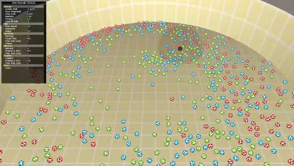
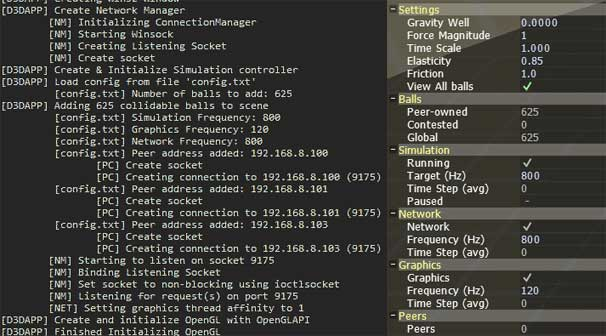
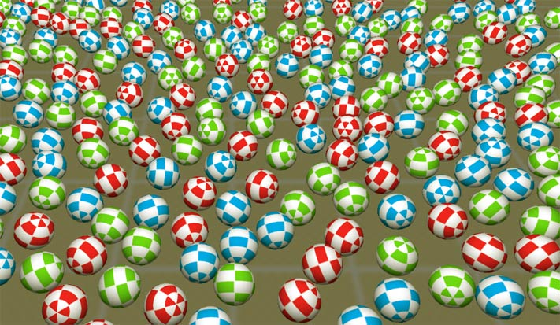
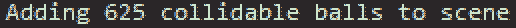
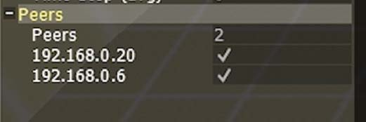
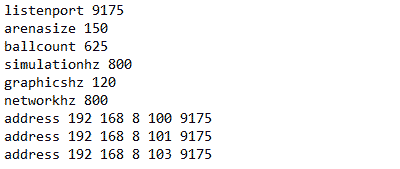

A multithreaded distributed processing (masterless peer-to-peer) physical simulation app, with live configurable simulation parameters and thread frequencies

Written in C++11, using Win32, OpenGL, Winsock, GLM and AntTweakBar

MSC Computer Science for Video Game Development, University Of Hull, UK
A rigid-body physics simulation app featuring physically-affected spheres in a cylindrical container (circular, walled), where the user can use movable gravity wells, which repel and attract, based on the user's mouse input. Wells can be moved vertically (to a degree). Multiple app instances can connect (via a masterless peer-to-peer network) across a network, where each machine (or app instance) has its own gravity well, controlled from its networked machine. The remote wells all affect the balls in the scene, and ownership/contention of each ball is negotiated between machines (a ball affected by one well is owned by the machine owning the well; balls which are affected by multiple wells are shared). Balls will have differing physical properties (mass), which will be represented visually by colour (see below):

Furthermore, the program will be tested for network error handling by software simulating packet loss.
See the project in action:
The application is written in C++11, and is developed for Microsoft Windows 10 (as a Win32 app), and uses a bespoke entity-component system for rapid development. Further libraries and specifications:
Hardware used (connected via WiFi):
The application itself requires numerous major components (and subsystems) to manage the multiple APIs and data flow; these components can be divided up into the following:
The application class encapsulates Win32 functionality (such as window management and event response), and communicates with the connected Simulation, Networking and Rendering systems after loading configuration information during the message loop (the UI also allows the user to set simulation parameters; see Configuration).
The Simulation system simulates the motion and properties of the balls and wells. An STL vector of the balls is passed to the simulation class to process. The simulation process uses the values specified by the configuration file (and UI) to calculate the movement and new positions (based on delta time). This runs on a designated thread (and core), with timing controls to operate at the user-specified frequency.
Three collision calculations are performed:
In the worst case scenario, each ball must be tested against every other ball in the area (spatial subdivision techniques can reduce the area, and distribution will further split up ball collections).
With no optimisations or subdivisions, a linear search through the ball array (of size n) requires n2-n collision checks (when removing the test of a ball against itself).

A 'log' of collisions needs to be kept to stop collisions doubling (in the case of balls A and B, we store a collision for AB, but not for BA) - the logic is calculated twice for the same two balls otherwise. A simple hashed value stores these the balls in a standard array to process collisions.
The simulation calculates the new ball positions/rotations for each collision in the log, accounting for the coefficient of restitution (labelled as elasticity) and gravitational forces (world and any local gravity wells). Rotation is calculated on the distance and direction moved (friction is not implemented in rotation).
The networking system (like the simulation and rendering systems) runs on a designated thread (and core), with timing controls (for user-specified frequency). This system oversees distribution of data via WinSock sockets.
Non-blocking sockets are implemented and polled for data (this is performed at the frequency specified by the user). Packets with instructions such as 'ping' and 'join' were implemented (simple one-byte values) to build and maintain the network infastructure, and 'ball' packets described small groups of ball data (typically < 16). I used small to medium-sized packets to transmit batches of ball data, with the aim of sending smaller packets at a greater frequency (if the network frequency setting allows it).
Loaded configuration files will contain a list of target machines to connect with (the application will detect which address is its own external IP and will skip the outgoing connection to this address).
Each application is a peer/client node with the exception of the first running instance - this is the master peer (not a server) which begins the network construction. On a connection request, the accepting machine will validate the address, and will perform a basic handshake with the requesting machine. Once the handshake is complete, the requesting machine address is passed to all other connected machines, and a handshake is made, building a 'star' topology.

The application stores each connected machine address in a 32-bit integer (simply storing each IPv4 octet as a consecutive byte), creating a unique ID which is used as the key in an std::map of sockets. Ths structure of the networking system allows for a large number of machines (except any local network restrictions) which can be connected (during development in computing lab conditions, six machines were connected by simply adding their IP numbers to the config files).
Movement of each machine's gravity well is also broadcast across the network from each application to all its connected counterparts. This is performed at the rate of the Windows Processing loop (WndProc), and uses a small packet.
The rendering system (like the simulation and networking systems) runs on a designated thread (and core), with timing controls (for user-specified frequency). It uses OpenGL for Windows to render the scene (using the OpenGL functions of AntTweakBar). Graphical fidelity was out of scope for this project, so rendering was made to be barebones, to focus on other systems.
The configuration system loads configuration data from file and passes the appropriate system.

Example file contents:
| token | explanation |
|---|---|
| listenport | Port number to accept connections on |
| arenasize | Size of the arena geometry (and collisable area) |
| ballcount | Total number of balls to 'spawn' - this must be a square number |
| simulationhz | Desired operating frequency for Simulaton system |
| graphicshz | Desired operating frequency for Graphics system |
| networkhz | Desired operating frequency for Networking system |
| address | Space-separated IPv4 address and trailing port number to connect to (multiple entries) |
Note: Some values can be later changed in the UI